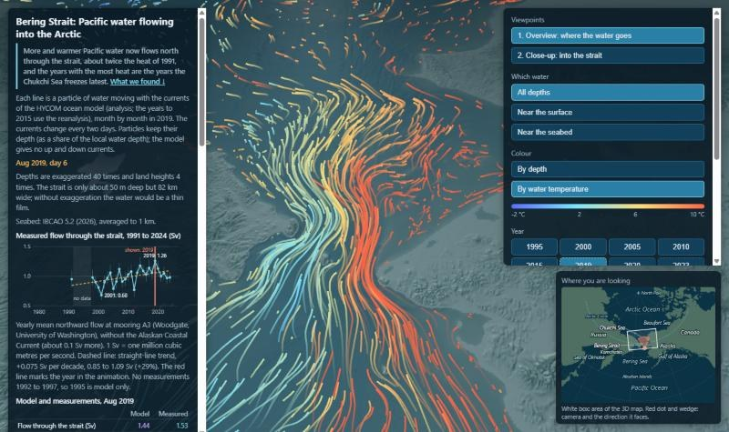
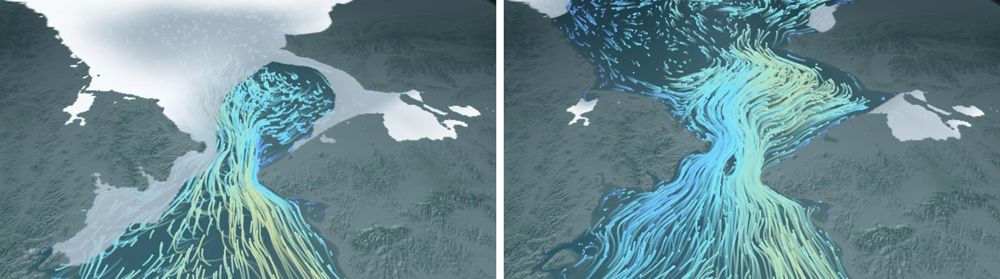

The question
The Bering Strait is the Pacific's only doorway into the Arctic: 82 km wide and only about 50 m deep. About a million cubic metres of water pass through it every second, northward on average, warmer and fresher than Arctic water. North of the strait, the Chukchi Sea has lost much of its sea ice.
The project set out with one question: how has the flow through the strait been affected by the melting of the ice over the years? It is not a research project; the aim was to see whether open data, put together and looked at carefully, would reinforce what scientists have found. The answer turned the question around.
What we found
More water, and warmer
The flow goes up and down from year to year, from 0.68 Sv in 2001 to 1.26 Sv in 2019 (1 Sv is a million cubic metres a second), but the trend is up by 0.075 Sv a decade. The water has also warmed, by about 0.8 °C in the yearly mean on the trend line, so the heat carried through the strait has roughly doubled. Over the same years the ice in the map area has changed most in November: the freeze-up comes later, and November ice has fallen by about two thirds on the trend line.
![Two stacked charts sharing a time axis from 1978 to 2030. Top: the yearly mean northward flow through the Bering Strait from 1991 to 2024 with error bars, rising from about 0.8 to 1.1 Sv along a dashed trend line, with a gap from 1992 to 1997 and the highest value, 1.26 Sv, in 2019. Bottom: sea ice area in the map area for May, August and November from 1979 to 2025; May stays near 550 thousand km² with a dip in 2017 to 2019, August falls to almost zero after 2002, and November falls from about 400 to 500 thousand km² in the 1980s to under 150 in several recent years](images/cs_flowice.png)
Heat in, ice out
Both rising together could be a coincidence of two trends, so the trends were removed and the years compared again. The link stays: the years with the most heat coming through the strait in summer and autumn are the years with the least ice in November. Heat alone matches about two thirds of the year-to-year differences in November ice. 2017, 2018 and 2019 carried the most heat on record, about 24 to 25 TW from June to November, and had among the least November ice: about 80 to 130 thousand km², against 540 in 2001. The timing points one way: a year's flow says little about the next spring's ice, but its summer heat says a lot about the same autumn's freeze-up.
![A scatter chart with one dot per year from 1991 to 2024. Across: the heat carried north through the strait, June to November mean, from about 8 to 25 TW. Up: November sea ice in the map area, from about 60 to 540 thousand km². The dots fall from top left to bottom right along a dashed line: 2001 and 2012 have little heat and much ice; 2017, 2018 and 2019 have the most heat and among the least ice; 2020 has the least ice. Darker dots are more recent years and sit mostly at the bottom right. r = -0.86, and -0.82 with both trends removed](images/cs_heatice.png)
Which way the arrow points
A correlation does not say which way the influence runs, and the same winds can both push water north and hold the ice back. Published research answers the direction. Margevich, Timmermans and Danielson (2024) tested whether losing the ice has changed the flow, and found that it has not: the increase comes from changes in the ocean and atmosphere far from the strait, a growing difference in sea level between the Pacific and the Arctic (Peralta-Ferriz and Woodgate 2023). The other direction is well established: the heat coming through the strait is the strongest single predictor of when the Chukchi ice retreats in spring and, with the retreat date, explains about two thirds of when it returns in autumn (Serreze and others, 2016). Woodgate and colleagues describe this heat as a trigger for the melt.
The takeaway. The Bering Strait is not a victim of the melting ice; it is one of the reasons the ice is melting. More and warmer Pacific water now flows north, about twice the heat of 1991, and in the years when the strait carries the most warmth in summer and autumn, the Chukchi Sea freezes latest. As the climate warms, the Arctic is not only melting where it stands; it is being warmed from the south, through a gap 82 km wide and 50 m deep. This project found the same with open data and a laptop: it does not add new science, but it shows the published picture holds when the raw measurements are put side by side.
The data
| What | Source | Used for |
|---|---|---|
| Ocean currents and water temperature, every 2 days, top 100 m | HYCOM GOFS 3.1: reanalysis GLBv0.08 (1995 to 2015) and analysis GLBy0.08 (2019 to 2023) | The moving particles and their colours, and the model side of the comparison |
| Flow, temperature and near-bottom current in the strait, 1990 to 2025 | Bering Strait moorings, R. Woodgate, University of Washington | The measured flow chart and the model check |
| Monthly sea ice concentration, 25 km grid, 1979 to 2026 | NOAA/NSIDC Climate Data Record of passive microwave sea ice concentration, version 6, via NOAA CoastWatch ERDDAP | The ice on the map and the ice chart |
| Seabed and land heights, 200 m grid | IBCAO 5.2 (International Bathymetric Chart of the Arctic Ocean) | The 3D seabed under the water |
| Coastlines of the North Pacific and the Arctic | Natural Earth, 1:50 million | The small "where you are looking" map |
One page, fourteen notebooks
The page is a single 3D view of the strait and the Chukchi Sea. The reader picks a year and a month, which water to show and how to colour it; two viewpoints fly the camera to an overview and a close-up, and the mouse and keyboard move it freely. Beside the view, three charts give the measured flow, the model against the measurements for the month shown, and the sea ice, with the finding above them.

| Notebook | What it does |
|---|---|
| 00bathymetry, 01webterrain | Cut the 3.4 GB IBCAO grid to the Bering and Chukchi seas and turn it into a height image and a coloured texture for the web. |
| 02hycomdownload, 02a to 02g | Download the model currents and temperature, one notebook per year (61 or 62 snapshots each, 35 to 85 seconds a snapshot). |
| 03moorings | Read the University of Washington yearly and monthly means and draw the measured trend. |
| 04hycommonthly | Average the snapshots for each month, sum the flow across the strait and pull out the model values at the mooring site. |
| 05particles | Release about 8,000 particles a month and move them through the changing currents, hour by hour, into compact track files (2.1 MB a month). |
| 06seaice | Download 47 years of monthly sea ice and turn each month into a white sheet on the page's grid. |
The page runs on deck.gl: its TerrainLayer draws the seabed and the land, and the particles are drawn as moving trails with its TripsLayer.
What the page shows
The same month, twenty years apart
On the page, the same view in the same month tells the story at a glance. In November 2000 the ice already covered the northern Chukchi Sea and the coasts, and the water coming through the strait was cool. In November 2020, after a summer and autumn with high heat coming through the strait, the sea was still open in late autumn: the November ice in the map area was the lowest in the 47-year record.

Model against measurement
Before trusting the moving water on the page, the model was checked against the moorings for every month with measurements: 28 months in seven years. It follows the seasons and the ups and downs from year to year, including the weak winter of 2020 and the strong February of 2019 (1.90 Sv in the model, 2.17 measured). The older reanalysis years run a little high, by 0.07 Sv on average, about what the Alaskan Coastal Current adds to the model but not to the mooring figure; the newer analysis years sit closer. The model's weak point is temperature near the seabed: in August it is 1 to 4 °C too warm in every year, likely because it mixes warm surface water down too far. The page says so beside the temperature colours.
![Two square scatter charts of model against measured values for 28 months from 2000 to 2023, with a grey line for a perfect match. Left, flow through the strait: the points lie close to the line from about -0.3 to 2.2 Sv, slightly above it in the older years, with November 2005 at the bottom left where both are negative. Right, water temperature near the seabed: February and May points lie on the line near -1.7 to -0.6 degrees, while August points lie 1 to 4 degrees above it, in a shaded band marked model more than 1 degree too warm](images/cs_model.png)
When the strait runs backwards
Strong northerly winds in autumn can push the water back towards the Pacific for days at a time. In November 2005 they did so often enough that the whole month ran south, and December followed. The model shows the same: −0.32 Sv for the month, with the particles on the page flowing south through the strait. In every November the model's snapshots swing by more than a sverdrup, and four to nine of the fifteen run south.
How the water is drawn
Each month, about 8,000 particles are released, half of them within 220 km of the strait, each at a random share of the local water depth. Each drifts for 3 to 8 days through the model currents, which change every 2 days and are blended in between, keeping its share of the depth, as the model gives no useful up and down currents. On the page, each particle is a short trail whose length is set in hours, so short trails mean slow water; one model day plays in 3 seconds.
The seabed is exaggerated 40 times and the land 4 times, as the page says; the ice is a white sheet from the satellite concentration of the month.
Problems in the data, and how they were handled
- Two model runs. The HYCOM reanalysis ends in 2015; later years come from the operational analysis, a different model run. Both use the same grid here, cell for cell, but a jump between 2015 and 2019 may come partly from the switch. The page marks the analysis years with dashed buttons and a dividing line in the comparison chart.
- No measurements in 1995. The moorings have a gap from 1992 to 1997, so 1995 is compared with the average of all years for each month and shown as a hollow circle.
- Different things measured. The mooring flow leaves out the Alaskan Coastal Current (about 0.1 Sv) and is measured near the bottom at one site; the model flow is summed across the whole width of the strait at its narrowest. The model should sit a little higher, and in the reanalysis years it does.
- Downloads that do not subset. The HYCOM server returns all 40 depth levels, so each snapshot was 3 to 4 times larger than needed; the downloads were split into one notebook per year, each safe to stop and restart.
- Camera controls that did not move. deck.gl's first-person controls move the camera 20 m per key press, invisible from 260 km up. The page replaced them with its own, with steps scaled to the camera's height.
Limits
The finding rests on correlations over 28 years at one mooring site and one map area; the direction of the link comes from published studies, not from this project. The heat values leave out the Alaskan Coastal Current, the warmest part of the inflow, and the 25 km ice grid is too coarse for the strait itself. The particles are drawn from a model, not observed, with no vertical motion and lives of days, not the months the water takes to cross the Chukchi Sea; the model's near-bottom water is too warm in summer. Eight years are shown, four months each.
Where this could be useful
- Teaching: the three branches of Pacific water across the Chukchi Sea, and why a strait 50 m deep matters to the Arctic, are easier to see than to read.
- Model checking in public: the page puts a model beside the measurements month by month, a habit that rarely reaches readers outside science.
- Other straits: the same open-data pipeline could show the flow through Fram Strait, the Strait of Gibraltar or the Korea Strait.
About
Lik Ren Tai applies data science in two fields: environmental science and railway systems. This project was built with Python (xarray, NumPy, pandas, rasterio, matplotlib) and deck.gl, with its TerrainLayer for the seabed and TripsLayer for the moving water.
Currents and temperature: HYCOM GOFS 3.1, HYCOM consortium. Measured flow: Bering Strait mooring data, R. A. Woodgate, University of Washington (Woodgate, Stafford and Prahl 2015, Oceanography 28(3); Woodgate 2018, Progress in Oceanography 160). Sea ice: NOAA/NSIDC Climate Data Record of Passive Microwave Sea Ice Concentration, version 6 (doi:10.7265/b18j-z797), via NOAA CoastWatch ERDDAP. Seabed: IBCAO 5.2. Coastlines: Natural Earth. Studies cited: Serreze, Crawford, Stroeve, Barrett and Woodgate (2016), J. Geophys. Res. Oceans 121; Margevich, Timmermans and Danielson (2024), J. Geophys. Res. Oceans 129; Peralta-Ferriz and Woodgate (2023), Geophys. Res. Lett. 50; Woodgate, Weingartner and Lindsay (2010), Geophys. Res. Lett. 37. This is an independent project, not affiliated with or endorsed by any of the sources.